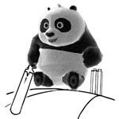
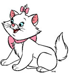
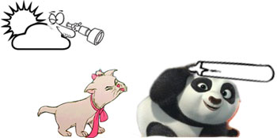
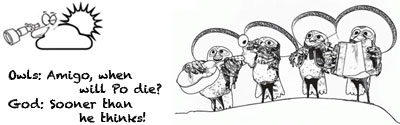
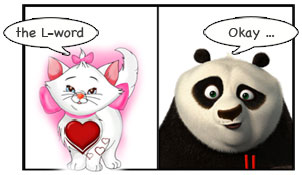

Long long ago, when there were no cellphones and personal computers (imagine, if you can), was born a panda named Po, and after a few years, a kitten named Pushi. The story starts at Siliguri, when Po was six years old, and Pushi was just three!
Part I - They meet
Pushi and Po used to live in the same neighborhood in ...
Part II - They meet again
Eighteen years have passed since Pushi and Po met ...
Pushi married Po on 12 August 2012. But, the best part is yet to come - the reception parties - with you all - yay!
"You all are welcome to celebrate the occasion with us. We hope you'll be able to make it to the parties and wish us luck for our married life." -- yours truly, and
Part I - They meet - 1990, Siliguri

Pushi and Po used to live in the same neighborhood in Siliguri, and every day, with great excitement, Pushi would watch Po and his friends play cricket. Please do not take Pushi's intentions otherwise, as the excitement was solely for the game, of course. She wondered why she wasn't invited to play - "Let me grow up!" - she would think to herself.

One day it happened - Po had a little mercy watching Pushi sneak behind the wall, and he proposed - "Umm, would you like to learn cricket?". In an instant, Pushi was by his side, eagerly nodding her head - "Yes, of course - I can play better than you". But alas, the bat turned out to be ten times heavier than what she expected. Po, looking curiously till now, again came to rescue - "There there, let me help a bit".
Soon enough, Pushi realized that her cricket instructor, Po, was more interested in sneaking cursory glances at his crush - a pinkish bear-girl - at a balcony nearby.

Pushi poked a few times to bring Po's attention back to the more important issue at hand - teaching cricket - but it went in vain. "Bad, bad Po!" - she concluded.
The God must have had a really boring day in heaven. Yawning wide - he (he/she/it, whichever you prefer) looked down, and suddenly saw Po and Pushi together. Grabbing the telescope, he smiled to himself as he watched closely - "Here comes a task that will keep me amused for the next two decades!"
Part II - They meet again - 2008, Online
Eighteen years have passed since Pushi and Po met on the field in Siliguri. Right when Pushi was about to finish her undergrad studies and was looking for some academic guidance, Pushi's parents met Po's folks and learned that Po has migrated to another continent for higher studies. Who else can be a better guide for Pushi, they thought. "If only they knew" - God laughed again!
"Is it the same panda who ruined my cricket career? - My guide, again? - No way!" - was Pushi's first reaction. However, she had to write a 'formal' e-mail to Po anyway. Po replied after a week - in a perfectly professional tone, which felt quite 'haughty' to Pushi. "Bad, bad Po! - I'll teach you a lesson if I get a chance" - Pushi decided.
May be a month later, one fine afternoon, Po ping-ed Pushi in a chat box. Surprisingly, it was a long long chat - and Pushi came to know that Po knows magic. Pushi eagerly agreed to see some when Po comes to Siliguri - step one towards the trap! Po said he will bring some chocolates for her when he comes back in December. Chocolates, the ultimate bait for Pushi, guaranteed step two towards the trap as well.
More chats took place during September and October. Then, something magical happened around the Pujas - Pushi started having feelings for Po, which she only had for his chocolates till then. They started talking over phone for hours - Pushi started liking that Po reads a lot, the way he talks - Po got attracted towards Pushi's simplicity and honesty (even more after receiving her photos).
One thing led to another - and as you may expect, they happily set foot towards the inevitable!
Part III - The proposal - 2008, Over phone!

By the first week of November 2008, Pushi was sure that she was in love with Po. This was beyond her wildest dreams, but she had to accept her feelings. On the other end, Po was making up his mind in fixing the date to propose Pushi - may be on his birthday, 28 November. God, however, had slightly different (and more interesting) plans.
10 November 2008 - in no way different from the other days - Po and Pushi were on a phone conversation, as usual. The discussion, however, had taken an interesting turn that night.

Po: So, what do you think of me?
Pushi: What do you mean?
Po: I mean, umm, do you like me?
Pushi: I think so . . . (silence) . . . May be even more . . .
(silence) . . . Umm, the other 'L'-word too, I guess!
Po: Oh! . . . (silence for over 2 minutes) . . . Okay . . .
Awkward it was! Po did not expect the proposal to come to him - and Pushi, of course, did not expect just "Okay" from Po. Both were puzzled - Po did not know how to react - and Pushi thought she had misjudged Po's feelings for her. She spent the worst day in her life, and Po too, spent the whole night awake.
It took a sleepless night for Po to realize his mistake - first thing the next morning, he e-mailed Pushi to accept her proposal, and asked her to marry him. What's more to say - you should've seen Pushi's reaction!